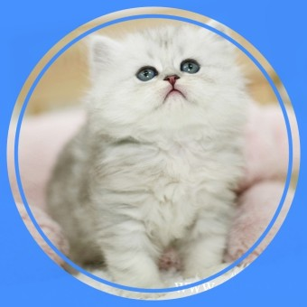

<!DOCTYPE html>
<html></html>
<head>
<title>html</title>
</head>
<body>
<h1><a href="index.html">cat</a></h1>
<ol>
<li><a href="2024.html">history</a></li>
<li><a href="2027.html">face</li>
</ol>
<h2>cat</h2>
고양이의<strong>생김새 <u> 머리가 둥글고 얼굴은 짧고 넓으며, 눈이 둥글고 커서 양안시(양쪽 눈의 망막에 맺힌 대상물을 각각이 아닌 하나로 보게 하고, 입체적으로 보게 하는 눈의 기능)의 능력이 뛰어나다. 귓바퀴는 작은 삼각형 모양으로 끝에 긴 털이 있으며 몸에는 다양한 무늬가 있다. 몸길이는 보통 30~60cm이며 몸무게는 2~3kg부터 7.5~8.5kg에 이르기까지 다양하다. 꼬리는 종류에 따라 길이가 다르며 보통은 22~38cm 정도이다. 발가락은 앞다리에 5개, 뒷다리에 4개가 있으며 발톱을 살 속에 감출 수 있다.

    야생의 고양이가 길들여져 가축화되었으며, 야생 고양이는 산림 속에서 산다. 1년에 2~3회 번식하며 한배에 4~6마리의 새끼를 낳는다. 쥐, 작은 조류, 개구리 등을 잡아먹는다.
    [네이버 지식백과] 고양이 [cat] (국립중앙과학관 - 포유류·양서·파충류 정보, 김인규, 이한수)</u></strong></body>
</html>